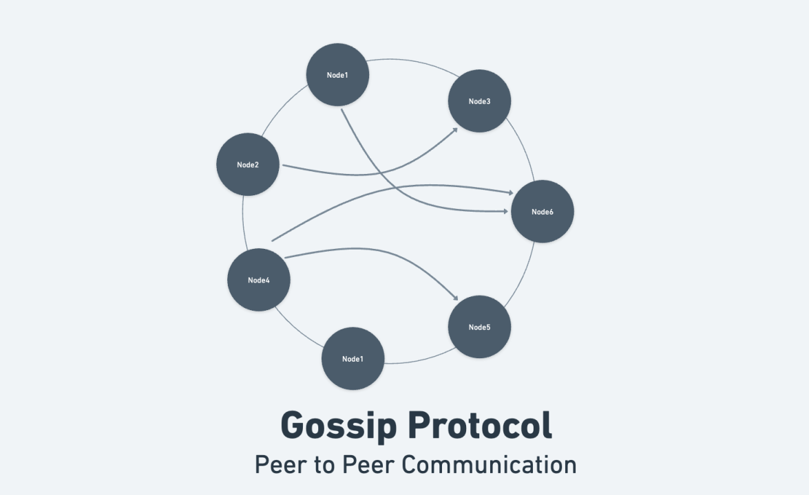

System Design Mastery
Master scalable systems with premium insights
💬 Gossip Protocol: Scalable Information Spreading in Distributed Systems
1️⃣ What is it?
Gossip Protocol is a communication mechanism used in distributed systems where nodes randomly talk to a few other nodes and share information periodically. Over time, the information spreads across the entire system — just like rumors.
Gossip is used for:
- ❤️ Node health updates - Detecting live vs dead nodes
- 👥 Cluster membership - Knowing which nodes are in the cluster
- 🚨 Failure detection - Quickly identifying failed nodes

📊 Gossip Protocol
2️⃣ Why Does It Exist? (What Problem Does It Solve?)
In distributed systems with 1000+ nodes that frequently join and leave, with random failures happening:
❌ Without Gossip Protocol
- If every node talks to every other node: Network overload
- Complexity grows exponentially
- Hard to scale to large clusters
✅ Gossip Protocol Solves
- Efficient state sharing with minimal network traffic
- Scalable communication for any cluster size
- Automatic fault detection with eventual consistency
3️⃣ What Breaks Without It?
Without gossip protocol in large clusters:
- 🔴 Nodes don't know who is alive in the cluster
- 🔴 Hard to detect failures quickly and reliably
- 🔴 Slow consistency across the cluster
- 🔴 Difficult cluster management at scale
📌 Real-World Example:
In a 1000-node cluster, checking health directly would cause huge network traffic (1000 × 1000 connections = 1 million messages). Gossip reduces this to random peer-to-peer exchanges.
4️⃣ When to Use / When NOT to Use
✅ When to Use Gossip
- 🔷 Large distributed systems
- 🔷 Peer-to-peer systems
- 🔷 When scalability > strict consistency
Examples: DynamoDB, Kubernetes node health, Cassandra
❌ When NOT to Use
- 🔲 Small systems with few nodes
- 🔲 Centralized architectures (single coordinator)
- 🔲 When strong consistency is critical
Gossip adds unnecessary complexity in these cases
5️⃣ One Common Mistake
🚨 Assuming Gossip Gives Instant Consistency
Gossip provides eventual consistency, not instant consistency:
What gossip IS:
- ⚡ Fast propagation
- 📈 Scalable to any cluster size
What gossip is NOT:
- ⏱️ Instant or synchronous
- 🔐 Strongly consistent
6️⃣ Real App Connection
🗄️ Distributed Databases
Nodes use gossip to:
- Share replication information
- Detect failed nodes
- Share metadata updates
Used in: Cassandra, DynamoDB, Riak
☁️ Kubernetes Cluster
Nodes share:
- Heartbeat information
- Node health status
- Pod scheduling updates
Enables: Automatic node failure detection
🧊 Distributed Cache
Nodes exchange:
- State updates
- Cache invalidation
- Membership changes
Example: Redis Cluster, Memcached
🌐 P2P Networks
Peers broadcast:
- Network topology updates
- Peer availability
- Content availability
Example: BitTorrent, Blockchain networks
🧠 How It Works (Steps)
-
Every node periodically picks a few random
nodes
Random selection prevents coordination overhead
-
Shares its state info
Information about known nodes, their state, and metadata
-
Receiver merges state
Updates its own knowledge with newer information
-
Over time, entire cluster
converges
All nodes eventually have consistent information (eventual consistency)
Key Insight: The propagation speed grows exponentially! Each round reaches ~2x more nodes, so even 1000-node clusters converge in log(N) rounds.
🎯 Summary
Gossip protocol is a scalable communication mechanism in distributed systems where nodes periodically exchange state information with random peers.
It enables: Efficient state sharing, automatic failure detection, and cluster health monitoring without the overhead of centralized coordination.
Perfect for: Large distributed systems where you need eventual consistency, scalability, and resilience to failures.
💡 Pro Tip
Gossip is probabilistic by nature. You can tune the probability of gossip messages and the frequency to balance between consistency speed and network overhead.
Common parameters:
- 🔹 Gossip interval: How often to send gossip messages (e.g., every 100ms)
- 🔹 Fanout: How many random peers to contact per round (e.g., 3-5 peers)
- 🔹 Retransmission: How many rounds to keep spreading a message (e.g., log(N) rounds)